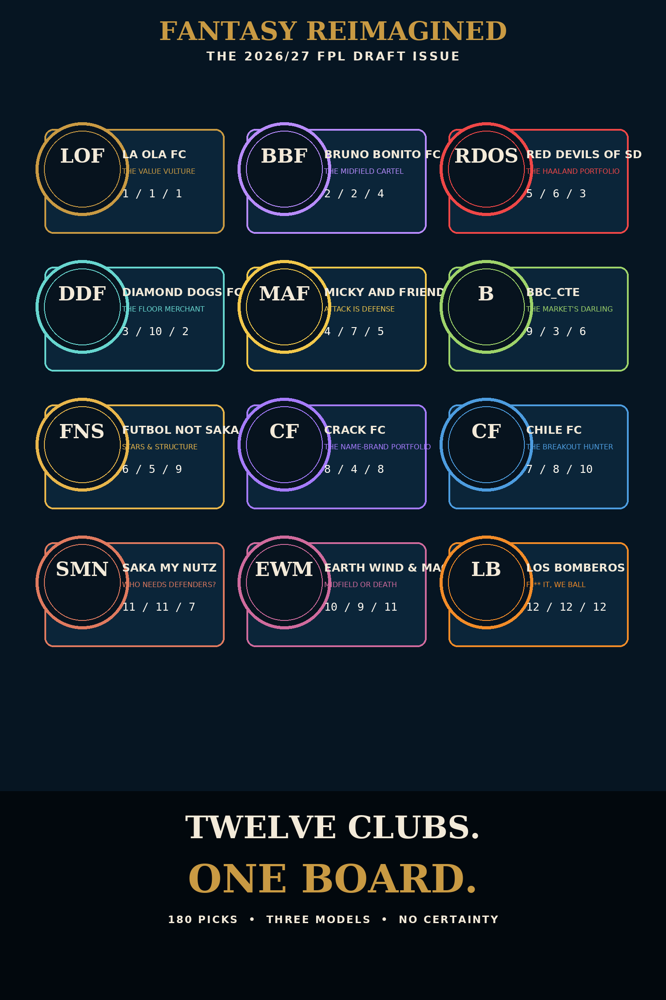

COLLECTION
Deeper Waves
The smaller currents inside our universe. Collections, life logs, and projects with their own energy.

Offbrand Wave
A life log, three recovered edits, and the social stream.
Enter world ↗
GDB Wave
Orientation, Low End Studies, and four creative films.
Enter world ↗Willpwr Wave
Health, discipline, and a daily check-in.
Enter world ↗ARSENAL
Arsenal
The real club: matchday identity, culture, memory, archive, and the bridge into La Ola FC.
Enter world ↗
La Ola FC
Jonathan’s fantasy club — publications, squad identity, and the FPL Draft league world.
Enter world ↗
Wu Wei Wave
Philosophy, flow, reflection, and writing.
Enter world ↗
Simulation Wave
Surreal concept worlds and visual experiments.
Enter world ↗
Capybara Wave
Wholesome mascot stories, humor, and everyday moments.
Enter world ↗